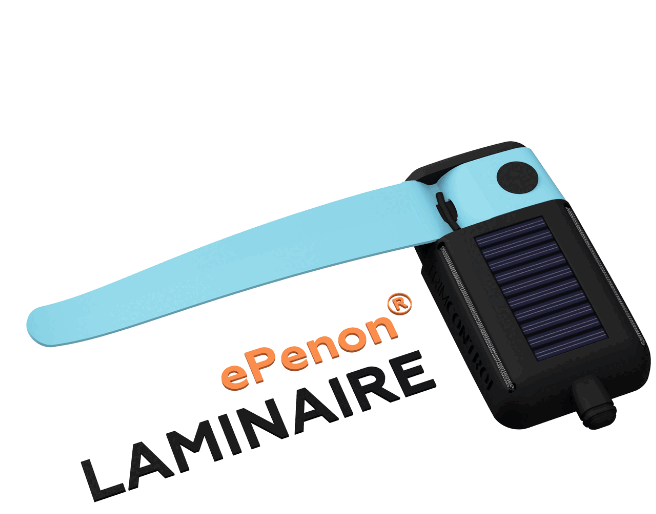

Alternance · SPIE Industrie
ePenons Trimcontrol — Neoline
📡 Qualification radio capteurs · Intégration flux UDP · Automate
Capteurs
ePenons (film d'air)
Protocole
UDP / IP
Intégration
Automate (API)
Client
Neoline
📋 Contexte du projet
Neoline développe un cargo à voile innovant (ePenons) qui utilise des capteurs "penons" pour mesurer le comportement du film d'air sur la voilure. Ces données sont essentielles pour optimiser le trimming (orientation) de la voile et maximiser la propulsion.
Le projet consiste à qualifier la réception radio de ces capteurs sans fil et à intégrer le flux de données vers l'automate via le protocole UDP, afin que l'API puisse exploiter ces mesures en temps réel.
🎯 Objectifs
- Qualifier la qualité de réception radio des capteurs penons
- Intégrer un flux UDP entre le récepteur radio et l'automate (API)
- Parser les trames UDP reçues dans l'automate pour extraire les données capteurs
- Identifier la source des pertes de données observées côté IHM
🔧 Ce que j'ai réalisé
- Banc de test avec ventilateur pour simuler le vent et activer les penons
- Écoute réseau et analyse des paquets UDP (supervision réseau, capture trames)
- Paramétrage UDP côté récepteur et côté automate
- Parsing des trames dans l'API : structuration des données reçues, extraction des valeurs de chaque capteur
- Comparaison IHM vs API pour identifier d'où provenaient les pertes affichées
- Rédaction du compte rendu de projet avec résultats et conclusions
✅ Résultats obtenus
- Chaîne complète capteur → récepteur → UDP → API validée
- Démonstration que les pertes de données provenaient de l'interface logicielle (IHM) et non du réseau ni des capteurs physiques
- Flux de données temps réel opérationnel côté automate
Illustrations
Visuels du Projet

